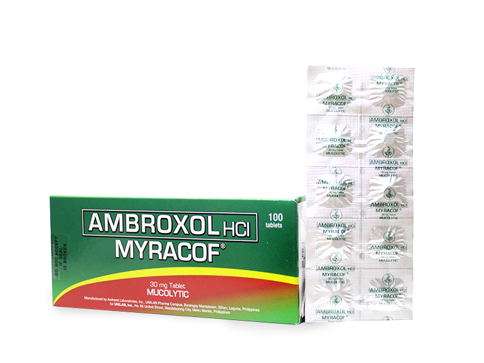
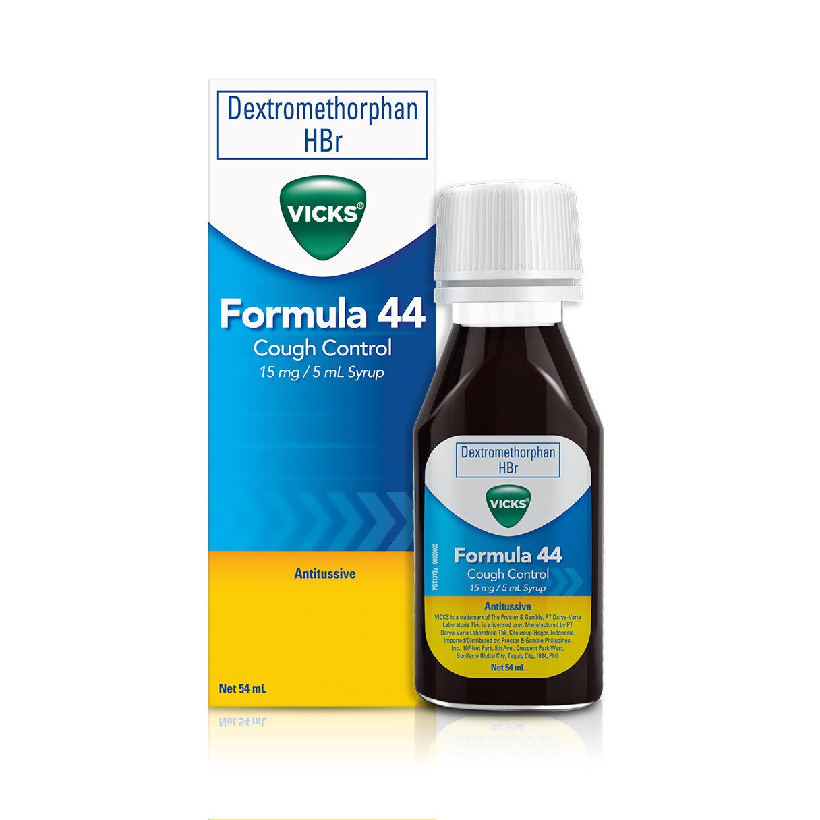
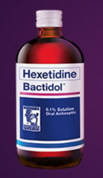

Medicine Guide For Cough

ROBITUSSIN-TABLET
Description
Robitussin is an expectorant. It helps loosen congestion in your chest and throat, making it easier to cough out through your mouth. Robitussin is used to reduce chest congestion caused by the common cold, infections, or allergies. It may also be used for purposes not listed in this medication guide.Guide
Use exactly as directed on the label, or as prescribed by your doctor. Do not use in larger or smaller amounts or for longer than recommended.Do not give this medication to a child younger than 4 years old. Always ask a doctor before giving a cough or cold medicine to a child. Death can occur from the misuse of cough and cold medicines in very young children.
Drink extra fluids to help loosen the congestion and lubricate your throat while you are taking this medication.
Take Robitussin with food if it upsets your stomach.
Measure the liquid form of Robitussin with a special dose-measuring spoon or cup, not a regular table spoon. If you do not have a dose-measuring device, ask your pharmacist for one.
Do not crush, chew, break, or open a controlled-release, delayed-release, or extended-release tablet or capsule. Swallow it whole. Breaking or opening the pill may cause too much of the drug to be released at one time.
Store at room temperature away from moisture, heat, and direct sunlight.

ROBITUSSIN-CHILDREN
Description
When your little one is under the weather, helping them feel better is a parent’s number one goal. Thankfully, there’s Children’s Robitussin, a range of products for cold and cough relief for kids. Identify your child’s symptoms to help choose the Children’s Robitussin product that will help them with their symptoms, so they can get back to being kids.Guide
do not take more than 6 doses in any24-hour period
■ measure only with dosing cup provided
■ keep dosing cup with product
■ mL = milliliter

RUBITUSSIN-ADULT
Description
Find powerful relief from cough and chest congestion, along with a bright taste of real elderberries for a soothing impact. Every dose of this formula is crafted to control coughs and help clear chest congestion without any artificial colors, dyes, or gluten.Guide
do not take more than 4 doses (8 chewable tablets)in any 24-hour period
■ this adult product is not intended for use in children
under 12 years of age

PLEMEX
Description
Relief of cough due to common colds, flu, and bronchospasm associated with asthma, bronchitis, and other lung disorders.Guide
Plemex Forte cap Adult 1 cap tid-qid. Plemex Forte syr Adult 5 mL (1 tsp) tid-qid. Plemex For Kids syr Childn >40 kg 2 tsp tid, 7-12 yr (20-40 kg) 1 tsp 4 hrly, 5-6 yr (15.5-20 kg) 1 tsp tid, 2-4 yr (10-15.5 kg) ½-1 tsp tid.
TUSERAN FORTE
Description
Tuseran® Forte contains a Total Cough Relief Formula that relieves dry, non-stop cough, itchy throat (due to postnasal drip) and throat pain.Guide
How much and how often should you use Tuseran® Forte? Adults and Children Orally, 1 capsule every 6 hours, as recommended by a doctor. Use with caution in patients with high blood pressure, toxic goiter, benign prostatic hypertrophy, heart rate irregularity, glaucoma, and in those taking antidepressants.
SOLMUX-SYRUP
Description
This medicine is a mucolytic agent used to relive cough characterized by excessive sticky sputum or phlegm to help treat respiratory tract disorders such as acute bronchitis.Guide
How much and how often should you use this medicine? Orally, 5 mL (1 teaspoonful), every 8 hours. Or, as directed by a doctor. For more information on safety, precaution and other information about this product, please see the Patient Information Leaflet.
SOLMUX-TABLET
Description
Carbocisteine (Solmux) is a mucolytic agent used to relieve cough characterized by excessive or sticky sputum or phlegm to help treat respiratory tract disorders such as acute bronchitis.Guide
Orally, 1 capsule every 8 hours. Or, as directed by a doctor.
NEOZEP
Description
Phenylephrine HCl a nasal decongestant clears obstructed air passages and nasal sinuses due to congestion making breathing easier. It also reduces postnasal drip. Chlorphenamine Maleate, an anti-allergy, relieves symptoms such as runny nose, sneezing, and itchy, watery eyes.Guide
Adults: Orally, 1 tablet every 6 hours, or as recommended by a doctor. Neozep Z+ Forte provides the maximum daily intake of zinc when taken at the recommended dose of 4 times a day. To avoid excessive intake, refrain from using other supplements or medicines containing zinc.

AMBROXOL
Description
Ambroxol is a medication indicated for airway secretion clearance therapy. Ambroxol is a secretolytic agent used in the treatment of respiratory diseases associated with viscid or excessive mucus. It is the active ingredient of Mucosolvan, Lasolvan or Mucoangin.Guide
Adults: normal dosage from 30 mg (one tablet of Ambroxol) to 120 mg (4 tablets of Ambroxol) taken in 2 to 3 divided doses. Kids 2 to 5 years of age: half a teaspoon of Ambroxol syrup three times a day. Children 5 years and older: one teaspoon of Ambroxol syrup 2-3 times a day.
BUTAMIRATE-SINECOD
Description
Butamirate (or brospamin, trade names Acodeen, Codesin, Pertix, Sinecod, Sinecoden, Sinecodix) is a cough suppressant. It has been marketed in Europe and Mexico, but not in the United States.Guide
Adults: 1 tablet 3 times daily (at least 8 hours between doses). To be swallowed whole. Maximum daily dose: 3 tablets (150 mg). Overdose with butamirate (Sinecod) may cause the following symptoms: somnolence, nausea, vomiting, diarrhea, dizziness and low blood pressure.

1. adults and children 12 years and over: dissolve 1 drop slowly in the mouth. Repeat every 2 hours as needed or as directed by a doctor.
2. children under 12 years of age: do not use.
VICKS-FORMULA 44
Description
This combination product is used for the temporary relief of cough, sneezing, or runny nose due to the common cold, hay fever or other upper respiratory allergies. This product contains a non-opioid cough suppressant (such as chlophedianol, dextromethorphan).Guide
Directions1. adults and children 12 years and over: dissolve 1 drop slowly in the mouth. Repeat every 2 hours as needed or as directed by a doctor.
2. children under 12 years of age: do not use.

BACTIDOL
Description
Hexetidine (Bactidol) 0.1% Solution is indicated for its antibacterial and antifungal action in the following circumstances: Minor oropharyngeal infections and inflammatory conditions including candidiasis. As an aid in the prevention and treatment of gingivitis.Guide
Gargle 2x a day for 24 hr protection.
BACTIDOL
Description
Sore throat is one of the most common complaints brought to the attention of otolaryngologists. It may be symptomatic of a variety of illnesses, which is why the treatment must be matched to the individual.Taking Lozenges is a convenient, affordable option for symptomatic treatment of acute and chronic pharyngitis, irritation or inflammation of the upper respiratory tract and relief of unpleasant postoperative sensation in the throat.
Bactidol Extra Soothing Lozenges provides flavorful and convenient relief from sore throat. Comes in Orange and Honey Lemon Flavor. Available in packs of 8 and 16 Lozenges.
Guide
1 lozenge every 2-3 hours with a maximum daily dose of 8 lozenges.
BACTIDOL
Description
Itchy or Dry Cough can be caused by the inflammation of your throat and upper airways, which results in a tickling sensation.This type of cough comes with little to no phlegm or mucus. Sometimes, you also develop sore throat due to frequent coughing.
Guide
Adult and children older than 12 years:10 mL (2 teaspoons) every 4 hours. Don't exceed 6 doses in a day.
Children aged 6 to less then 12 years:
5 mL (1 teaspoon) every 4 hours. Don't exceed 6 doses in a day.

BACTIDOL
Description
Heavy or Cough with Phlegm produces mucus in the lungs. It is often accompanied by colds, fatigue, and/or postnasal drip.Guide
Adult and Children older than 12 years:10-15 mL (2-3 teaspoon) every 6 hours. Do not exceed 60 mL per day.
Children aged 6 to 12 years:
5-10 mL (1-2 teaspoon) every 6 hours. Do not exceed 30 mL per day.